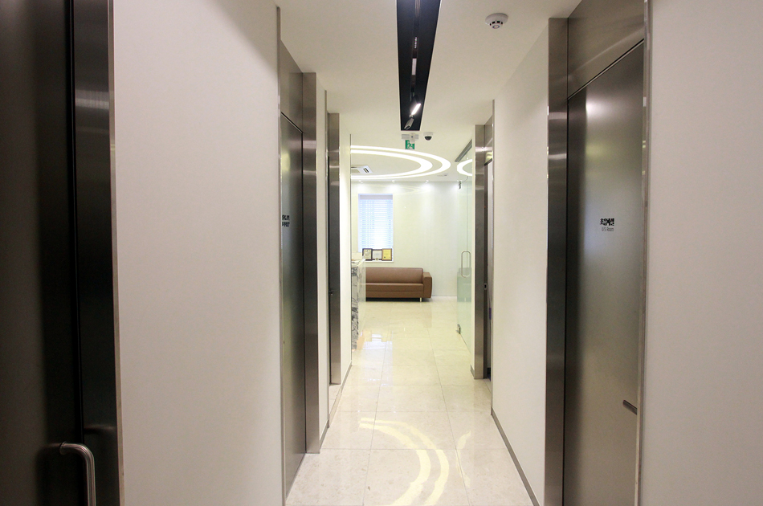
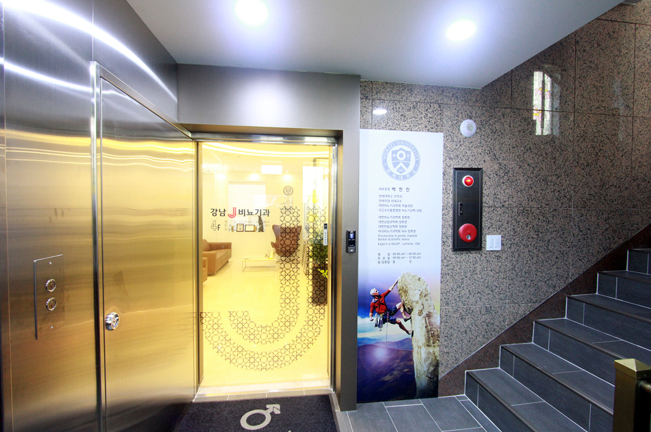

SURGICAL PHILOSOPHY
모든 수술에 타협 없는
모든 수술에 타협 없는
3S (Safe · Simple · Speed) 원칙
두 대의 첨단 소독기계와 자외선 소독기가 설치된 자체 설계 수술방에서, 최소 국소 신경마취와 실시간 생체 활력증후 모니터링, 수술 중 음악요법(IOM)을 적용하여 환자 중심의 안전하고 간결한 수술을 집도합니다.
27년
1999년 개원 정통 임상
5개실
독립 개인진료실 운영
2인
연세의대 전문의 협진
01
Safe
최소 국소 신경마취와 실시간 맥박·혈압·산소포화도 모니터링으로 전신 부담 최소화
02
Simple
사전 정밀 상담과 치밀한 수술 설계로 불필요한 동작 없이 간결한 술기 적용
03
Speed
전용 수술기구와 베테랑 남자 간호팀의 팀워크로 회복기간 단축 및 합병증 예방
CLINICAL CENTERS
전립선부터 남성의학까지, 7개 전문 진료 센터
진료 분야를 선택하시면 해당 센터의 핵심 진료 개요와 세부 시술 바로가기를 확인하실 수 있습니다.

전립선 센터
전립선비대증의 표준 치료법인 홀렙(HoLEP)과 비절개 유로리프트(UroLift)부터 전립선염·전립선암·전립선통까지 단계별 정밀 진단과 맞춤 치료를 시행합니다.
PRIVATE ARCHITECTURE
환자의 프라이버시를 최우선으로 설계한 공간

01
프라이버시를 지키는 5개의 독립 개인진료실
타 환자분과 마주치는 부담을 덜어드리기 위해 독립된 5개의 개인진료실을 운영합니다. 모든 진료 및 검사 과정에는 의사와 남자 간호사만 참여하며 전자차트 시스템으로 기록 보안을 철저히 유지합니다.

MEDIA & ACADEMIC ARCHIVE
전문의 영상 가이드 · 언론보도 아카이브
전립선비대증의 수술적 요법 Holep vs Urolift
전립선 크기와 상태에 따른 홀렙(HoLEP)과 유로리프트의 적응증 및 장단점을 비교 설명합니다.
홀렙과 음경임플란트 동시수술(H-combi) 안내
한 번의 마취로 전립선비대증과 발기부전을 동시에 교정하는 H-combi 수술 과정을 안내합니다.
유로리프트 수술 장단점과 적응증
피부 절개 없이 전립선을 결찰하여 당일 일상 복귀가 가능한 유로리프트의 적응증을 소개합니다.

세브란스 교수 출신 이웅희 원장 진료 개시 · 2인 협진
연세의대 의학박사·비뇨의학교실 교수 출신 이웅희 원장 영입을 통해 전문 협진 체제를 강화했습니다.

박천진의 남성 upgrade_52 — 전립선비대증의 새로운 수술법
기존 절제술 대비 출혈과 회복 부담을 낮춘 전립선비대증 최신 수술적 치료에 대한 의학 칼럼.
박천진의 남성 upgrade_56 — 소변 색깔과 내 몸의 건강 상태
일상에서 확인할 수 있는 소변 색깔 변화와 비뇨기과적 이상 신호의 조기 감별 방법 안내.
HOURS & LOCATION
진료시간 안내 및 오시는 길
2026년 8월 24일 기준 2인 전문의 진료시간표입니다. 예약제로 운영되므로 내원 전 유선 문의를 권장합니다.
세브란스 교수 출신 이웅희 전문의 진료시간
목요일 휴진
| 구분 | 월 | 화 | 수 | 목 | 금 | 토 |
|---|---|---|---|---|---|---|
| 오전 | 진료 | 진료 | 진료 | 휴진 | 진료 | 진료 |
| 오후 | 진료 | 진료 | 진료 | 휴진 | 진료 | - |
박천진 대표원장 진료시간
월·목 오후 휴진
| 구분 | 월 | 화 | 수 | 목 | 금 | 토 |
|---|---|---|---|---|---|---|
| 오전 | 수술/진료 | 수술/진료 | 수술/진료 | 수술/진료 | 수술/진료 | 진료 |
| 오후 | 휴진 | 진료 | 진료 | 휴진 | 진료 | - |
강남J비뇨기과는 예약진료로 운영되고 있어, 예약 없이 방문하실 경우 대기시간이 발생하거나 당일 진료가 어려울 수 있습니다.
가급적 02-3018-7575로 사전 예약 및 예약 확인 후 내원해 주시면 감사하겠습니다.
* 점심시간 13:00 ~ 14:00 / 일요일·공휴일 휴무 / 2026.08.24 공지 기준 [병원 최종 확인 후 확정]
* 점심시간 13:00 ~ 14:00 / 일요일·공휴일 휴무 / 2026.08.24 공지 기준 [병원 최종 확인 후 확정]
[임시 이미지 - 실제 지도 API / 최신 약도 교체 필요]
지하철 7호선 학동역 8번·9번 출구 사이 (건물 내 지하 주차장 완비)
- 주소
- 서울시 강남구 학동로 203 4F (학동역 8번, 9번 출구 사이)
- 대표전화
- 02-3018-7575 (해외: 82-2-3018-7575)
- 상담·문자
- 010-9190-7575 (상담시간 외 문자 문의 가능)
- 상담시간
- 월~금 09:00 ~ 18:00 / 토요일 09:00 ~ 13:00
- 카카오톡
- ID: gnjurology · FAX: 02-516-2030